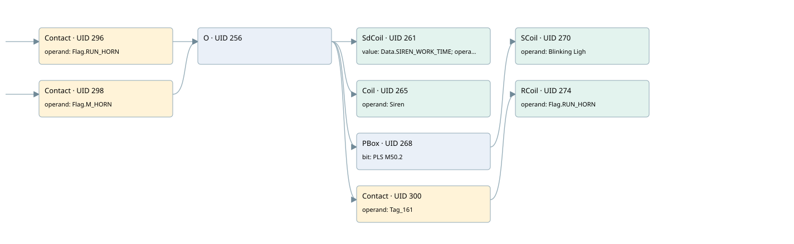

a 57.6 siren alarms
allarm manager · 검색 색인 순서 7 · 원본 내부 NID 추정 5
백업 PLF 원본의 2645615 바이트 위치에서 복원한 XML. 검색 문서 933의 객체 키 161022007a0f000000000000와 연결했다. 이름 해석 9/9개. 남은 RefId는 상수 또는 미해석 참조다.
연결 구조 다시 그리기
원본 Part/PCon/Wire를 이용한 연결도다. TIA 화면의 래더 배치 또는 실행 결과를 재현한 그림은 아니다. 핀 연결은 아래 표와 원본 XML을 기준으로 읽는다. 노드 위에 마우스를 두면 피연산자 이름을 볼 수 있다.

접점·코일·블록과 피연산자
| Part UID | Gate | Negated 핀 | 연결 피연산자 |
|---|---|---|---|
| 296 | Contact | operand = Flag.RUN_HORN | |
| 298 | Contact | operand = Flag.M_HORN | |
| 256 | O | ||
| 261 | SdCoil | value = Data.SIREN_WORK_TIME; operand = Tag_161 | |
| 265 | Coil | operand = Siren | |
| 268 | PBox | bit = PLS M50.2 | |
| 270 | SCoil | operand = Blinking Ligh | |
| 300 | Contact | operand = Tag_161 | |
| 274 | RCoil | operand = Flag.RUN_HORN |
접점 경로를 펼친 조건식
Contact·O/A·비교기의 원본 연결을 읽기 쉽게 펼친 보조 해석이다. POWER는 전원 레일 시작을 뜻한다. 호출 블록·에지·타이머의 내부 동작과 다중 쓰기 순서는 이 표로 실행 검증하지 않았다. 미해석 핀과 RefId는 원문 연결표에서 확인한다.
| UID | 동작 | 대상 | 원본 접점 경로 | 내용 |
|---|---|---|---|---|
| 261 | SdCoil | Tag_161 | (Flag.RUN_HORN OR Flag.M_HORN) | 시간 동작 SdCoil; 타이머 의미 추가 확인 / 시간 인자 Data.SIREN_WORK_TIME |
| 265 | Coil | Siren | (Flag.RUN_HORN OR Flag.M_HORN) | 조건에 따른 Coil 기록 |
| 270 | SCoil | Blinking Ligh | PBox UID 268.out (블록 동작 확인) | 조건 성립 시 Set |
| 274 | RCoil | Flag.RUN_HORN | ((Flag.RUN_HORN OR Flag.M_HORN) AND Tag_161) | 조건 성립 시 Reset |
원본 배선 연결
| Wire UID | 동일 Wire 연결 끝점 |
|---|---|
| 302 | Powerrail {} ↔ Part 296.in ↔ Part 298.in |
| 284 | ORef 275 (Flag.RUN_HORN) ↔ Part 296.operand |
| 297 | Part 296.out ↔ Part 256.in1 |
| 285 | ORef 276 (Flag.M_HORN) ↔ Part 298.operand |
| 299 | Part 298.out ↔ Part 256.in2 |
| 295 | Part 256.out ↔ Part 261.in ↔ Part 265.in ↔ Part 268.in ↔ Part 300.in |
| 286 | ORef 277 (Data.SIREN_WORK_TIME) ↔ Part 261.value |
| 287 | ORef 278 (Tag_161) ↔ Part 261.operand |
| 288 | ORef 279 (Siren) ↔ Part 265.operand |
| 289 | ORef 280 (PLS M50.2) ↔ Part 268.bit |
| 290 | Part 268.out ↔ Part 270.in |
| 291 | ORef 281 (Blinking Ligh) ↔ Part 270.operand |
| 292 | ORef 282 (Tag_161) ↔ Part 300.operand |
| 301 | Part 300.out ↔ Part 274.in |
| 294 | ORef 283 (Flag.RUN_HORN) ↔ Part 274.operand |
식별자 해석 근거 9개
| ORef UID | RefId | 이름 | IdentXmlPart 파일 | 해석 방법 |
|---|---|---|---|---|
| 275 | 3 | Flag.RUN_HORN | 0565-IdentXmlPart.xml | UID/RID + search-text + NID agreement |
| 276 | 40 | Flag.M_HORN | 0565-IdentXmlPart.xml | UID/RID + search-text + NID agreement |
| 278 | 43 | Tag_161 | 0567-IdentXmlPart.xml | UID/RID + search-text + NID agreement |
| 277 | 42 | Data.SIREN_WORK_TIME | 0565-IdentXmlPart.xml | UID/RID + search-text + NID agreement |
| 279 | 44 | Siren | 0567-IdentXmlPart.xml | UID/RID + search-text + NID agreement |
| 280 | 45 | PLS M50.2 | 0567-IdentXmlPart.xml | UID/RID + search-text + NID agreement |
| 281 | 39 | Blinking Ligh | 0567-IdentXmlPart.xml | UID/RID + search-text + NID agreement |
| 282 | 43 | Tag_161 | 0567-IdentXmlPart.xml | UID/RID + search-text + NID agreement |
| 283 | 3 | Flag.RUN_HORN | 0565-IdentXmlPart.xml | UID/RID + search-text + NID agreement |
검색 코드 보조 자료
참조 명칭을 찾기 위한 자료이며 실행 순서나 AND/OR 관계는 위 연결표로 확인한다.
"flag".run_horn "tag_161" "data".siren_work_time "flag".m_horn "siren" "pls m50.2" "blinking ligh" "tag_161" "flag".run_horn